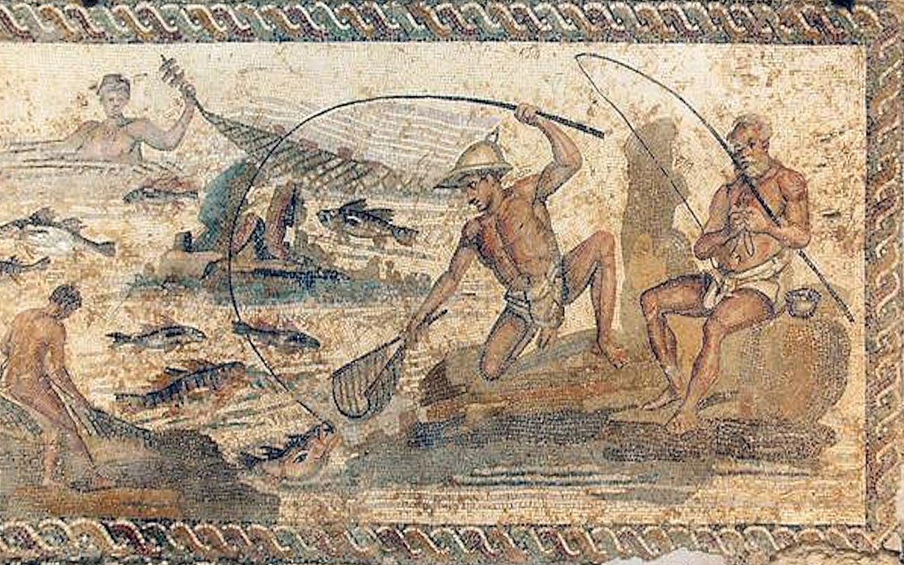
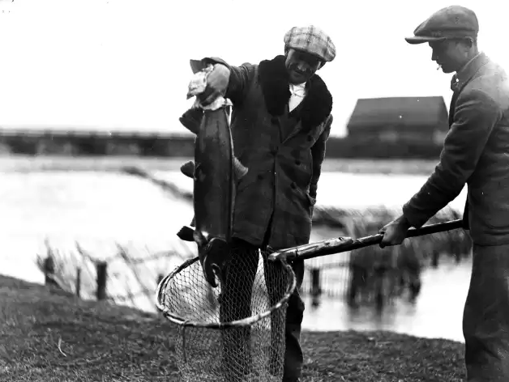
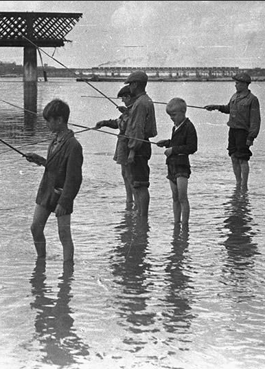

Wędkarstwo jako rozrywka, początkowo tylko najbogatszej części społeczeństwa, znane była od tysiącleci. Rzymski poeta Publiusz Owidiusz Naso w poemacie Halieutica (Sztuka rybołówstwa) opisał wędkarskie sposoby łowienia ryb różnych gatunków. W I wieku n.e. o wędkowaniu wspomina też w swoim epigramie Marcus Valerius Martialis, a Claudius Aelianus w swoim dziele De Animalium Natura również zawarł obszerne opisy metod wędkowania.
W średniowieczu zagadnienia wędkowania najpełniej przedstawione są w dziele pt. Księgi Św. Albana, którego jeden rozdział, Traktat o łowieniu ryb na wędkę poświęcony jest nie tylko ówczesnym metodom i technikom łowienia, ale podkreślał także etyczne implikacje wędkarstwa. Ten sposób spędzania wolnego czasu i rozrywki, zaspokajającej naturalne w naturze ludzkiej pragnienie powrotu do łowieckich korzeni, rozwinął się najpełniej wśród społeczeństw gwałtownie industrializującego się zachodniego świata.
Również w polskiej literaturze znajdują się liczne dowody, że „łowy rozrywkowe”, jak nazywał je Leśniewski, nie obce było także naszej bogatszej klasie społecznej i zdobywało licznych zwolenników i naśladowców.
I wojna światowa wywarła nader ujemny wpływ na stosunki gospodarcze w regionie przemyskim. Szczególnie ucierpiało rybołówstwo tak rzeczne, jak i stawowe. Zanik moralności i poczucia cudzej własności spowodował, że rybostan katastrofalnie się zmniejszył, gdyż łowił każdy, kto tylko chciał, bez żadnych kart lub zezwoleń, posługując się nawet dynamitem i granatami. Łowiono, nie bacząc ani na okresy ochronne tarła ani na zapisane w ustawie wymiary. Ponadto nieuczciwi handlarze, równocześnie dzierżawcy rewirów rybackich utworzywszy spółkę handlową, dyktowali ceny, jakie sami chcieli, osiągając minimalny zysk 200%.
Jednak cierpliwość miejscowych czynników, którym leżała na sercu sprawa rybactwa wyczerpała się, w wyniku czego w roku 1923 zawiązuje się w Przemyślu towarzystwo dla ochrony tutejszego rybactwa pod nazwą: „Towarzystwo Sportowo-Rybackie na rzece Sanie i Wiarze w Przemyślu”. Początkowo liczyło ono 37 członków i chociaż na razie nie miało możliwości korzystania z przyjemności łowienia, rozpoczęło ostro pracę nad uzdrowieniem stosunków, kontrolując targi rybne, powodując konfiskaty ryb złowionych wbrew ustawie i tępiąc paskarstwo. W roku 1926 Towarzystwo wydzierżawia pierwszy rewir rzeki Wiar, a w roku następnym cztery rewiry na rzece San, zaś w roku 1929 także cztery rewiry rzeki Wisznia. Liczba członków wzrosła do 200. Kłusownictwo tępione przy współudziale członków spadło do minimum, a w rewirach zapanował porządek.
Oprócz intensywnego zarybiania dzierżawionych rewirów i kontroli nad gospodarką innych dzierżawców Towarzystwo podjęło walkę z paskarstwem rybnym. Zbudowano własnym kosztem sklep z basenami i wodociągiem, gdzie jeden z miejscowych kupców stale sprzedawał ryby z godziwym zyskiem, po znacznie niższych cenach, doprowadzając do upadku paskarską spółkę handlową wyzyskującą drobnych dostawców i windującą ceny ryb na bliższych i dalszych rynkach. Wynikami pracy przemyskiego Towarzystwa interesują się okoliczne powiaty, a rezultatem tego jest powstanie dwóch nowych towarzystw sportowo-rybackich: w Samborze i Jarosławiu, których celem było uzdrowienie i tam stosunków w dziedzinie rybactwa.
Celem wpojenia w młodzież szkolną obowiązku uzyskiwania pozwoleń na łowienie ryb Towarzystwo udzielało za minimalną opłatą 1 zł swoje pozwolenia na łowienie metodą spławikową ryb przez cały czas wakacji. Prócz moralno-wychowawczych korzyści Towarzystwo zyskało w wielu wypadkach pomoc młodzieży w wykryciu nawet poważnych przekroczeń ustawy przez zawodowych i przygodnych kłusowników.Członkom innych towarzystw bawiącym na wczasach w powiecie  przemyskim Towarzystwo udzielało bezpłatnych zezwoleń na łowienie ryb wędką przy zachowaniu przepisów i regulaminu gospodarzy.
W maju 1930 roku powstało w Przemyślu nowe Towarzystwo Sportowo-Rybackie „San”. Stosownie do postanowień statutu członkiem Towarzystwa mógł być tylko obywatel narodowości polskiej. W roku 1932 Towarzystwo liczyło już 50 członków, w latach następnych: 1933 – 65; 1934 – 90; 1935 – 105; 1936 – 87; 1937 – 93. Również w innych miastach tamtejszego regionu powstawały towarzystwa mające m.in. propagować i kultywować sport wędkarski. Wymienię je kolejno: Powiatowe Tow. Rybackie w Gorlicach – rok 1906, Powiatowe Towarzystwo Rybackie w Jaśle – rok 1909, Towarzystwo Sportu Wędkowego w Jarosławiu – 1925, Towarzystwo Rybackie w Krośnie – przed 1929 r., Towarzystwo Sportu Wędkowego w Lubaczowie – przed 1929 r., Sportowe Towarzystwo Rybackie „Okoń” w Sanoku – 1926 r. oraz wiele innych w miastach na wschód od obecnej granicy Państwa.
W latach okupacji 1939–1945 władze niemieckie nie rozwiązały organizacji rybackich i wędkarskich, uznając je za organizacje gospodarcze wyższej użyteczności. Naczelną organizacją był Związek Organizacji Rybackich. Drugi stopień tworzyły Okręgowe Towarzystwa Rybackie zorganizowane na wzór KTR-u. Wszystkie towarzystwa wędkarskie musiały być ich członkami. W r. 1941 siedzibą ZOR stał się Kraków. W czasie wojny na terenie Generalnej Guberni działało 38 towarzystw wędkarskich, w których zrzeszonych było 3033 członków.